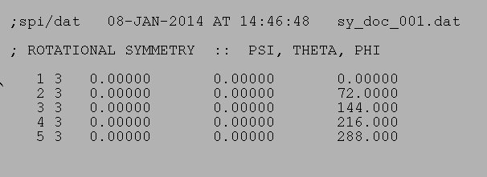

Usage Example - Operation: '
SY DOC
'
Create Symmetry Document file
Procedure used:
sydoc.spi
.OPERATION:
SY DOC
; Create Symmetry Document file
.SYMMETRY DOCUMENT FILE:
sy_doc_001
; Symmetry doc file (output)
.SYMMETRY TYPE (C/CI/T/O/I/G):
CI
; Rotational symmetry
.ROTATIONAL SYMMETRY FOLDNESS:
5
; 5 fold
SYMMETRY DOC FILE

sy_doc_001